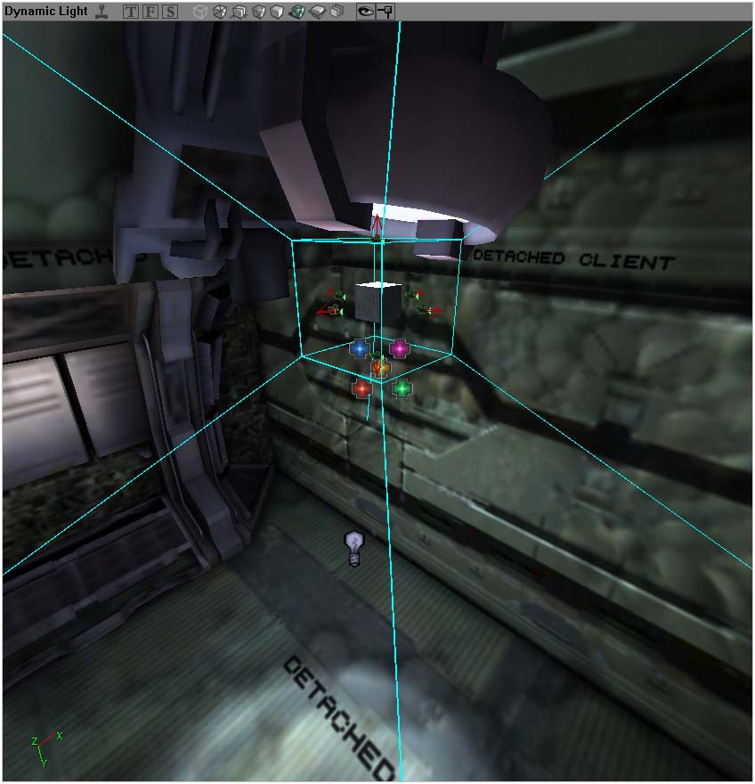

Pseudo-Raytraced Shadowing
This technique was shown to me and others by Commader K who developed this technique. He's asked me to write this tutorial, so here we are. This method has its ups and downs and it actually does look very nice ... when used in the right places at the right times. While this definately doesn't equate to Doom 3's shadowing, it does allow some very interesting scenes to be made for UT2004 without any need for coding. However, with extra code, more effects can be pulled of. Other effects which I didn't use to any strong effect were the use of extra materials and as well as other texture methods would could further enhance the scenes.
Here are some pictures of the example scene I have cooked up:
Credits where Credits are due
- Commander K (From IRC, #unrealed) developed this technique.
Pros
- Complex geometry doesn't matter in this technique. For example the Unreal Logo mesh is quite a lot, but it doesn't matter. Any kind of geometry doesn't matter.
- Movement/Vert meshs/Alpha textures are all supported.
- It is faster in relative to have similar amounts of ShadowProjects to do the same job.
- Accurate
- Scale shadow accuracy. Higher accuracy = Lower FPS and vice versa
- Creates fuzzy shadows naturally, but not in a good way.
- Fancy shadows can be created with the use of extra materials
Cons
- Still has a large footprint on CPU
- There are noticable seams in the shadows where the projectors combine together
- Can only be used in relatively simple scenes. By that I mean that things can't be heavy overlapped on top of each other (barrels on top of barrels for example)
- Large use of projectors. Projectors still aren't rendered properly on static meshes, and they cause darkening (32-bit) or pixelation (16-bit) when a lot of them are on one static mesh.
- Extra work for the mapper
- Still a little trial and error method.
- Each light source needs up to 6 projectors and 6 scripted textures on the minimum.
Method
The way this method works is that there is a shadow room and a normal room. The shadow room is the same as the normal room in terms of geometry. The shadow room can have different geometry, but we will get to this later. Then create 6 scriped textures with different names, but easily identifiable like CamA_1, CamA_2, CamA_3 ... etc, for example. Next create the projectors like so,

|
What you want to do here is create six dynamic projectors all facing the different directions of a cube. This is because this idea works somewhat like a cubemap does. So now you have six dynamic projectors in a cube. Assign the ProjTexture to the different scripted textures. Set the projector's FOV to 90. As for the other properties, tweak them a little. Adjust the drawscale so that each projector's end plate aligns with the others. Ideally you want each projector projecting the scripted image as a cube. The diagonal lines you see in the image above are actually two projectors FOV extents merged as one line ...
So this is how your normal room should appear like now.
Now you have to create the shadow room. Here is the one that was used for this scene.
Anything black in the shadow room can 'cast' a shadow. Anything that us grey (128, 128, 128) is transparent. Tweak, tinker and play with stuff in this room and you get interesting results. In this room is where the magic happens. You use ClientCameraTexture to draw a portal onto the scripted images. In the case of my example, I used Movers (attached to the swinging light) as the positions of each camera for each scripted image. If you line up the correct textures for the correct viewpoint you get the appropriate shadow cube. In reality your actually emulating cube projection so to speak.
It's actually pretty easy to understand, once you realize that the actual method is a ingenious way of thinking. Have fun!
James 'Solid Snake' Tan
Comments
Solid Snake: Ahh I hope this is well explained. It should be kind of easy to understand. Some please format this page. It looks ugly compared to other Wiki pages.
Arelius: I think you did a decent job explaining it, wonderful way to think out of the box, not exactally easy to update your level afterwards though. but used in the right places, it could do a great job.
DemonThing: Can we have an example map perhaps?